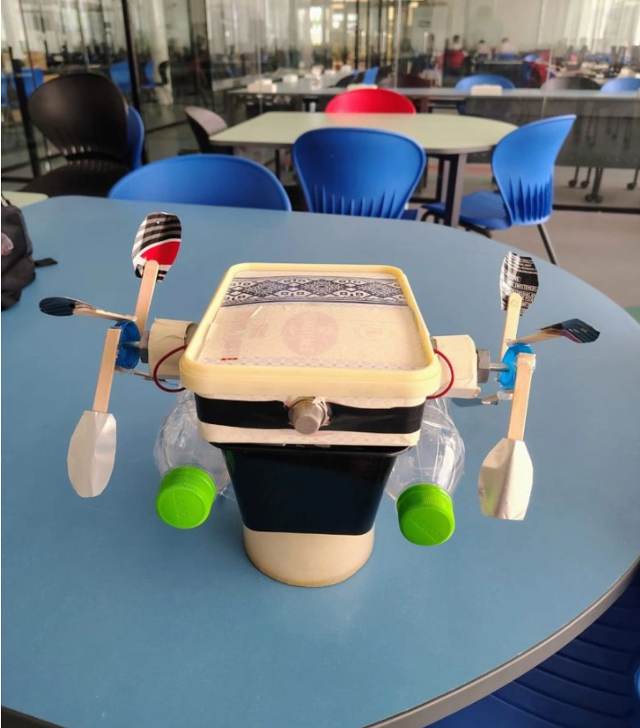
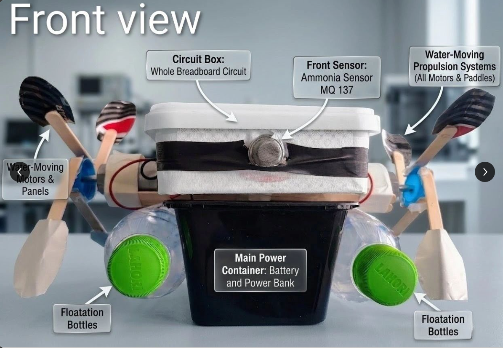
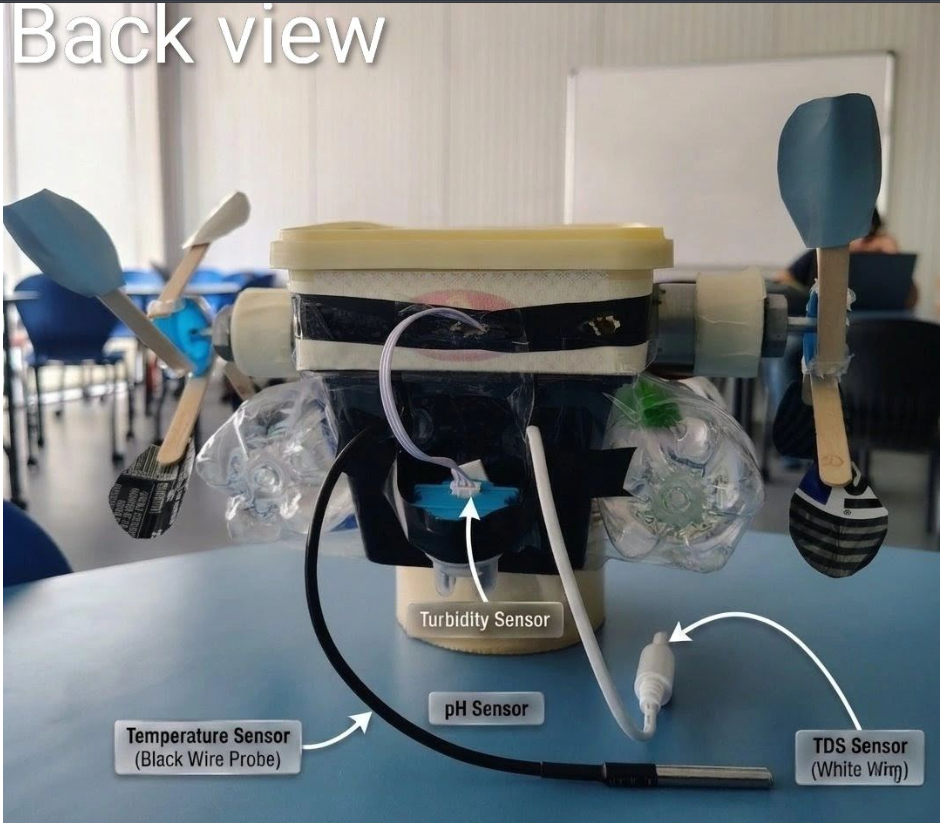

Smart Water Monitoring RC Boat
A floating IoT laboratory for real-time water quality analysis.
Developed as part of a three-member team, this ESP32-powered RC boat integrates temperature, turbidity, pH, and TDS sensors for real-time water quality monitoring. I contributed to sensor interfacing, electronic circuit assembly, L298N-based motor control, Wi-Fi communication, Water Quality Index (WQI) calculations, and hardware testing. The prototype also explores ammonia detection using an MQ-137 sensor, with the sensing approach partially implemented and tested.

Explore Project Details ↗
Hardware Architecture
The prototype combines an ESP32 controller, multiple water quality sensors, a Wi-Fi communication interface, and differential motor control. The floating structure uses lightweight flotation bottles and a central enclosure for the electronics and power supply.

